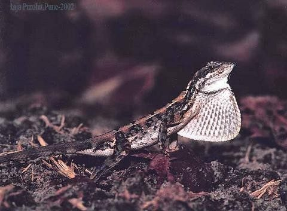

फैन-थ्रोटेड लिज़र्डFan-throated Lizard
Sitana ponticeriana · Agamidae · REP-0026

- Scientific name वैज्ञानिक नाम
- Sitana ponticeriana (Cuvier, 1829)
- Family कुल
- Agamidae
- Hindi हिंदी
- फैन-थ्रोटेड लिज़र्ड
- Local names स्थानीय नाम
- fan throated lizard, fan-throated lizard, sitana, chhipkali
- Status here यहाँ की स्थिति
- native
- Movement आवागमन
- Resident, here all year
- IUCN IUCN
- LC
- Review समीक्षा
- audited and independently read
When to look कब देखें
Expected mainly in March, April, May, June, July, August, September, October, November. मुख्यतः मार्च, अप्रैल, मई, जून, जुलाई, अगस्त, सितंबर, अक्टूबर, नवंबर में अपेक्षित।
Uses and possibilities उपयोग और संभावनाएँ
Drawn from the documented uses in the profile below, where each is labelled traditional, current or a research lead. All uses →
Tell it apart from इनसे अलग पहचानें
फैन-थ्रोटेड लिज़र्ड / Fan-throated Lizard
Sitana ponticeriana (Cuvier, 1829) — Agamidae
फैन-थ्रोटेड लिज़र्ड — बस्ती के सूखे घास-मैदानों और चट्टानों पर साल के गर्म महीनों में दिखने वाली एक छोटी, रंगीन छिपकली। नर का गले में एक बड़ा, रंगीन 'फैन' (fan) या तह होती है, जिसे वह अपने सामने की ओर खोल सकता है — यह एक धमकी की मुद्रा है और महिलाओं को आकर्षित करने के लिए भी है। इसकी पीठ हल्की भूरी, पेट पीला या नारंगी होता है। यह छिपकली तेजी से दौड़ती है, अपनी पूँछ को हवा में लहराती है, और कीटों को पकड़ती है। मादा (जिसमें फैन नहीं होता) नर के मुकाबले नीरस रंग की होती है।
Quick Identification त्वरित पहचान
| Feature | Description |
|---|---|
| Size | Small lizard; snout-vent length 8–10 cm; total length with tail 20–25 cm |
| Body | Slender, laterally flattened; smooth scales |
| Coloration | Males: olive-brown back with orange-yellow or red throat fan; females: dull brown, no fan |
| Throat fan | Males only: large, extensible fan with orange, yellow, and red coloration; used in display |
| Tail | Long, thin, used for balance; often held curved |
| Eyes | Small, dark; good lateral vision |
| Behaviour | Active, alert, rapid runner; performs head-bobbing displays; basks regularly |
Field tip: A small, active lizard on open ground or rocks with rapid movements. Males display a distinctive coloured fan at the throat when defending territory or courting females. Easily distinguished from other lizards by this unique fan.
हिंदी — कैसे पहचानें:
नर के गले में रंगीन 'पंखा' (fan) खुलता है।
मादा में कोई पंखा नहीं, रंग नीरस।
तेजी से दौड़ती है, सूखी जगह में मिलती है।
गर्मियों में सक्रिय।
Morphology आकारिकी
Biometrics:
| Measurement | Range |
|---|---|
| Snout-vent length (SVL) | 80–100 mm |
| Total length (with tail) | 200–250 mm |
| Tail length | 120–150 mm |
| Weight | 15–30 g |
Body structure: Slender, graceful lizard with laterally flattened body (compressed side-to-side). Head small, blunt-snouted. Limbs relatively long and slender, adapted for rapid movement. The skin is covered with small, smooth scales arranged in regular rows.
Coloration (male): Dorsal (back) coloration olive-brown to tan, often with darker markings or banding. Throat fan brilliant orange, yellow, or red, with the coloration varying individually and possibly with mood or season. Ventral (belly) pale yellow or cream.
Coloration (female): Dull brown or grey overall, lacking the distinctive throat fan. Underparts pale buff. Some females may show faint pattern of darker markings.
Throat fan: A unique feature of males: a large, circular, extensible fan of skin supported by hyoid cartilages, capable of expanding to approximately 3–4 times the head width. The fan is retracted when at rest and expanded during territorial or courtship displays.
Tail: Long, thin, tapering to a fine point; often curved. Used for balance during rapid movements and as a fat storage organ.
Limbs: Long and slender, with five digits on each foot. Digits have small claws adapted for gripping soil and rock.
Scales: Dorsal scales small, smooth, and uniform. No prominent crests or ridges.
Behaviour & Ecology व्यवहार और पारिस्थितिकी
Territorial displays: Males are highly territorial and engage in dramatic displays using the throat fan, head-bobbing, and body posturing. When threatening rivals or courting females, males expand the fan and perform rapid up-and-down head movements. The fan expansion can occur repeatedly within seconds.
Courtship: Males use the fan to attract females, combining fan expansion with head-bobbing and colour intensity changes.
Basking: Spends much of the day basking on rocks or open ground to thermoregulate. During hot midday hours, may retreat to shade.
Prey capture: Hunts small arthropods by stalking and rapid strikes. Feeds opportunistically on whatever insects are available.
Escape behaviour: Relies on rapid running to escape predators. May also use the tail as a distraction — when pursued, the tail may be autotomized (dropped), allowing the lizard to escape while the detached tail continues to wriggle, distracting the predator.
Activity pattern: Strictly diurnal. Active from early morning to late afternoon; most active during warm sunny hours.
Life Cycle / Phenology जीवन चक्र
| Stage / season | Event |
|---|---|
| December–February | Dormant or sluggish; minimal activity; often hidden in crevices or burrows |
| March–April | Emergence from hibernation; males begin territorial displays; breeding begins |
| April–June | Peak breeding season; males highly vocal with displays; females lay eggs |
| June–July | Egg-laying in burrows or crevices; clutch size 4–8 eggs |
| July–September | Eggs incubate; hatchlings emerge in late monsoon and post-monsoon |
| September–November | Hatchlings grow; adults remain active and foraging |
| November–December | Activity declines; preparation for dormancy |
Host Plants or Prey आहार
| Prey Type | Examples |
|---|---|
| Small insects | Small beetles, ants, mites, small grasshoppers |
| Insect larvae | Caterpillars of small insects |
| Arachnids | Spiders, scorpions (if small enough) |
हिंदी: छोटे कीटों का शिकारी। चींटियों, भृंगों और छोटे टिड्डों को खाता है।
Predators / Natural Enemies शत्रु
- Avian predators: Shrikes, kestrels, occasionally other raptors
- Reptilian predators: Snakes, occasionally larger monitor lizards
- Mammalian predators: Snakes, weasels, occasionally birds
- Parasites: Mites, ticks, intestinal helminths
हिंदी: शिकारी पक्षी, सांप और बिज्जू इसका शिकार करते हैं।
Agricultural / Human Relevance कृषि प्रासंगिकता
Pest control value: Fan-throated Lizards provide beneficial pest control by consuming large numbers of small insects, including agricultural pests.
Protected status: Protected under the Wildlife (Protection) Act, 1972 (Schedule IV). Capturing or killing is prohibited.
Cultural value: Popular with herpetologists and naturalists due to their spectacular throat displays and unique behaviour.
Habitat requirement: Requires open, sunny habitats with sparse vegetation and suitable ground for basking and breeding. Loss of such habitats is a potential threat.
Expected Locally स्थानीय रूप से अपेक्षित
Not a field record. Written from published accounts for eastern Uttar Pradesh. No confirmed local sighting yet — if you have seen it, that is what the atlas needs.
अभी तक स्थानीय पुष्टि नहीं। यह विवरण प्रकाशित स्रोतों से है, किसी अवलोकन से नहीं।
This species is NOT a field record. The distribution below is based on published sources describing where Fan-throated Lizards should be looked for in eastern Uttar Pradesh.
यह स्थानीय अवलोकन नहीं है। प्रकाशित स्रोतों पर आधारित।
Fan-throated Lizards are expected on open, sunny ground in Basti and Ayodhya districts during the warm months (March–November). Look for them on bare patches, rocky outcrops, and grassland during sunny mornings when they are active. Males are conspicuous when displaying their colourful throat fans. A first record should note location, time, whether the individual is male or female, and whether the fan was observed being displayed. Submit through the atlas About page.
Distribution वितरण
Global range: South and Central India; found from Gujarat and Rajasthan south to the Deccan.
In India: Distributed across the dry regions of central and southern India; locally abundant in suitable habitats.
In Uttar Pradesh: Locally abundant in dry grasslands and scrubland in eastern and central districts.
In Basti district / eastern UP: Locally present in suitable habitat (grassland, rocky scrub); abundance depends on habitat availability and season.
Research Questions शोध प्रश्न
- What is the seasonal activity pattern of Fan-throated Lizards in Basti, and when do they emerge from dormancy?
- How does substrate (sandy, rocky, grassland) influence habitat selection and population density?
- What is the frequency and context of throat fan displays in territorial males?
- बस्ती के सूखे घास-मैदानों में फैन-थ्रोटेड लिज़र्ड की संख्या कितनी है, और ये साल दर साल समान रहती है?
- Can students photograph individual males and document variation in fan coloration and size?
- How do changes in vegetation and land use affect the availability of suitable habitat?
Similar Species मिलती-जुलती प्रजातियाँ
| Species | How to tell apart | हिंदी | ||
|---|---|---|---|---|
| Common Garden Lizard (Calotes versicolor) | Larger (SVL 15 cm+); has a dorsal crest running from head to tail; males show brighter colours but no fan | लाल छिपकली | Garden Lizard is larger with a spiky crest. Fan-throated is smaller with a throat fan, no crest. | |
| [[garden_lizard\ | Oriental Garden Lizard]] (Calotes versicolor) | Larger; a crest of spines along the neck and back; no throat fan; breeding males with a red head | गिरगिट | A crested lizard on a wall or tree is the Garden Lizard; a small ground lizard that flashes a fan under the throat is the Fan-throated |
Field rule: A small, slender lizard with a distinctive coloured fan at the throat (males) is a Fan-throated Lizard. Larger lizards with dorsal crests running the length of the back are different species.
Taxonomy & Classification वर्गीकरण
Original description. The Fan-throated Lizard was first described by Georges Cuvier in 1829. The genus Sitana contains 5 recognized species, all with characteristic throat fans.
Subspecies. Sitana ponticeriana ponticeriana — the nominate subspecies found in central and southern India.
Family and order placement. Order Squamata; family Agamidae (dragon lizards and their relatives). The genus Sitana is endemic to India and is characterized by the unique throat fan.
Phylogenetic notes. Sitana is one of the most basal genera within Agamidae, with molecular studies suggesting early divergence from other Old World agamids.
IUCN status rationale. Listed as Least Concern (LC) due to wide range and stable populations in suitable habitats. Some local declines have been documented where suitable grassland and rocky habitat has been converted to agriculture or urban development.
Photo Gallery फोटो गैलरी
No photos yet — add field photos to media/species/fan_throated_lizard/ and run node scripts/sync_photos.js.
Wanted photos:
- Male displaying expanded throat fan
- Male with fan retracted (resting position)
- Female (without fan)
- Basking on ground or rock
- Habitat showing typical grassland/rocky area
References संदर्भ
- Cuvier, G. (1829). Le Règne Animal distribué d'après son organisation. Édition 2. Paris.
- Smith, M. A. (1935). The Fauna of British India, Ceylon and Burma: Reptilia and Amphibia. Vol. 2 — Sauria. Taylor & Francis, London.
- Whitaker, R. & Captain, A. (2004). Snakes of India: The Field Guide. Draco Books, Chennai. [Mentions agamids in comparative context]
- Pal, S., Shukla, A. & Kalakonda, A. (2018). Microhabitat preferences of Sitana ponticeriana (Cuvier, 1829) — implications for conservation in central India. Journal of Threatened Taxa 10(5): 11634–11640.
- IUCN Red List (2023). Sitana ponticeriana — IUCN Reptile Specialist Group assessment. Status: Least Concern.
- GBIF Occurrence Data — Sitana ponticeriana, India (2026).
Source file: species/fauna/reptiles/fan_throated_lizard.md